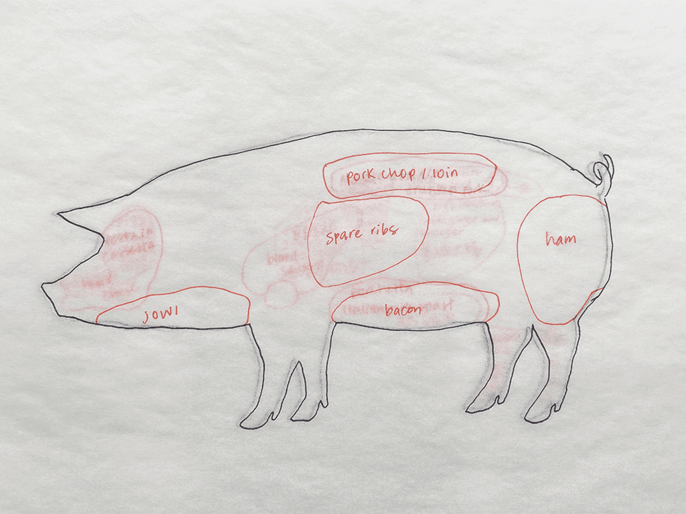

don ho shid / Bad Cuts
dong ho shid 當好食
really good eat
An expression for delicious.
Famous Hakka Dishes
Salt Brined Pork Belly
Braised Pork and Bamboo Shoots
Salted Mustard with Braised Pork Belly
Stir Fry Pig’s Intestines with Ginger and Vinegar
Pork Ribs and Dried String Bean Soup
Salted Mustard and Pork Stomach Soup
Pig’s Head Meat with Kumquat Sauce